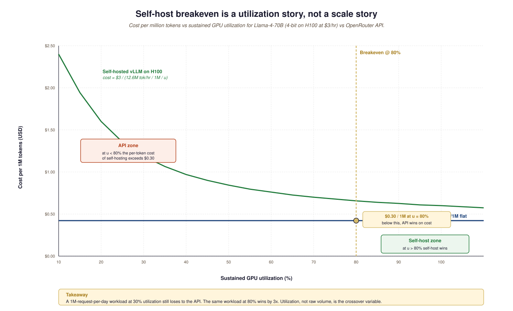

"Economic design" sounds abstract; in practice it means making the unit-cost numbers come out right. Every architectural decision in an LLM product has a cost shadow: which model you pick, how you cache, how aggressively you summarize history, whether you route cheap requests to a cheap model and only escalate to a flagship when needed. This section is the unit-cost math itself: what each decision costs, where the breakeven points sit, and how to design the system so the per-request economics work at the scale you are aiming for.
The numbers below are mid-2026 ballparks. They will be obsolete by 2027. The structure of the calculation is what to retain; the constants you should re-derive whenever pricing moves materially. Artificial Analysis publishes current per-token pricing across providers, which is the right input source.
58.2.1 The four design knobs that move unit cost
- Model tier: GPT-5.5 (\$3 / \$15 per 1M tokens) versus GPT-5-mini (\$0.25 / \$1.25) versus Gemini Flash (\$0.15 / \$0.60). A 20x cost differential between tiers; the cheap tier is good enough for most requests in 2026.
- Prompt caching: long shared system prompts (RAG context, agent scaffolds) can be cached. Anthropic and Google charge ~10% of normal input price for cache hits; OpenAI applies automatic prompt caching at ~50% discount. 70-90% cost savings on cache-heavy workloads.
- Routing: cheap model for easy requests, flagship for hard ones. Implemented as either a classifier that picks the model, or a "draft + verify" pattern that uses cheap then escalates only on disagreement.
- Self-host crossover: at sufficient volume, self-hosted vLLM on a rented H100 beats API pricing. The breakeven is utilization-dependent and roughly 50% sustained.
58.2.2 The breakeven formula
For self-hosting to win on cost: (rented_GPU_hourly_cost / GPU_throughput_tokens_per_hour) < (API_price_per_token × actual_utilization). Worked example: an H100 at \$3/hr serving Llama-4-70B at 4-bit through vLLM produces ~3,500 tokens/sec sustained (~12.6M tokens/hour) at 100% utilization. Cost per token: \$3 / 12.6M = \$0.24 per 1M tokens. Compare to API pricing of Llama-4-70B at \$0.30 per 1M tokens via OpenRouter: roughly equal at full utilization, API cheaper at <80% utilization. The crossover for the closed-API flagships is much further out: H100 self-hosting beats GPT-5.5's \$3 input price by 12x, but only if the model and the workload match.
58.2.3 Comparing the unit-cost positions
| Setup | Input $/1M | Output $/1M | Notes |
|---|---|---|---|
| GPT-5.5 (no caching) | \$3 | \$15 | Best quality, highest cost |
| GPT-5.5 (with caching, 80% hit) | ~\$0.90 | \$15 | 50% off cached portion |
| Claude Opus 4.6 (cache hit) | ~\$1.50 | \$75 | 90% off cached input |
| Gemini Flash 3 | \$0.15 | \$0.60 | Cheapest serious flagship-family |
| Llama-4-70B via OpenRouter | \$0.30 | \$0.30 | Open-weight on aggregator |
| Llama-4-70B self-hosted, 80% util. | \$0.30 | \$0.30 | Breakeven with OpenRouter |
| Llama-4-70B self-hosted, 30% util. | \$0.80 | \$0.80 | Self-hosting loses below 50% |

For most production workloads (extraction, classification, simple QA, summarization), Gemini Flash, Claude Haiku, or GPT-5-mini are within 5% of flagship quality at 10-20x lower cost. The pattern that works: route 95% of traffic to the cheap tier, identify the 5% that need flagship reasoning via a confidence-based heuristic or a small router model, and escalate only those. Total cost is 2-5x lower than "use flagship everywhere"; quality on the hard cases is preserved. Section 15.1 walks through the routing patterns.
Aggressive cost optimization without a quality eval is the most reliable way to ship a broken product. Build the eval set first, measure the flagship on it (your quality ceiling), measure cheaper options against the same set, then make the routing decision. Skip the eval step and you cannot tell whether the 5x cost reduction from switching to a cheaper model also dropped your accuracy from 95% to 70%. Section 16.3's benchmark discussion is the input.
Before scaling a Part X project past 1M requests/month, verify in writing:
- You have a quality eval that runs in CI against any model change.
- You have measured the cheap-tier model on that eval and accepted or rejected it with numbers.
- Prompt caching is enabled for any shared system prompt over 1K tokens.
- You have a routing layer (even a simple if/else) sending easy requests to the cheap tier.
- Your gateway (Section 57.2) tracks per-team budgets and alarms before overrun.
- Your cost forecast is based on p95 and p99 token counts, not the mean.
If any item is "no", expected cost overruns are 2-10x. Fix the gaps before scaling, not after.
58.2.4 What changes at the largest scale
At very high volume (billions of tokens per day, hundreds of millions of requests per month), the economics shift again. Provider-side discounts (committed-use contracts, Batch API at 50% off) become available; the self-hosting crossover becomes attractive even for flagship-quality models if you can train your own; the integration overhead falls as a fraction of total cost. The pattern at the very high end: self-host an open-weight model for the median request, call an API only for the long-tail hard cases. Artificial Analysis publishes the largest customers' (mostly tech companies) cost profiles; the public-disclosure data points are sparse but consistent with this pattern.
Section 58.3 turns to the cost-quality tradeoff in detail, and Section 58.4 covers the cost-management practices for sustained production deployments at scale.